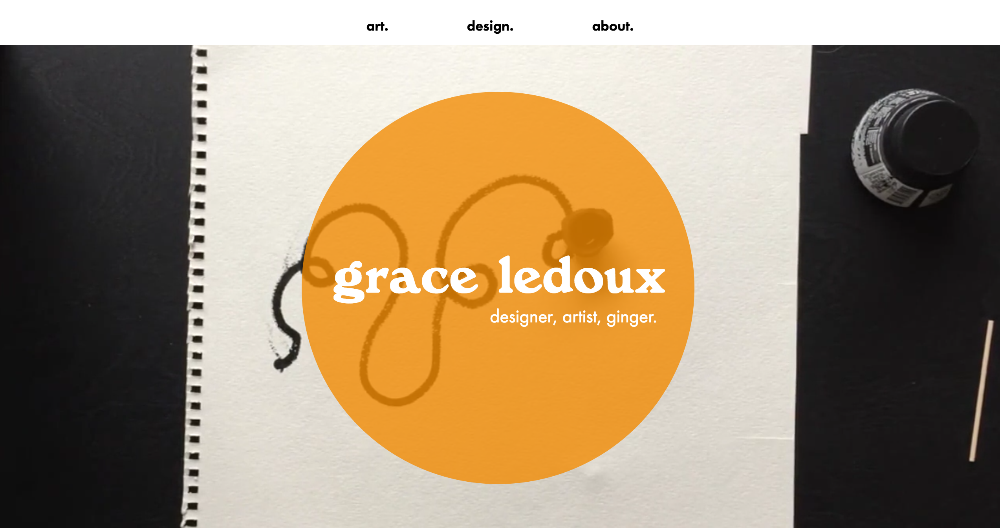
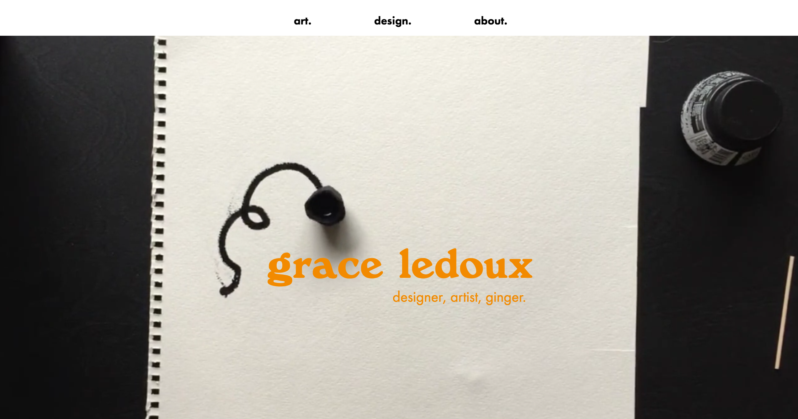
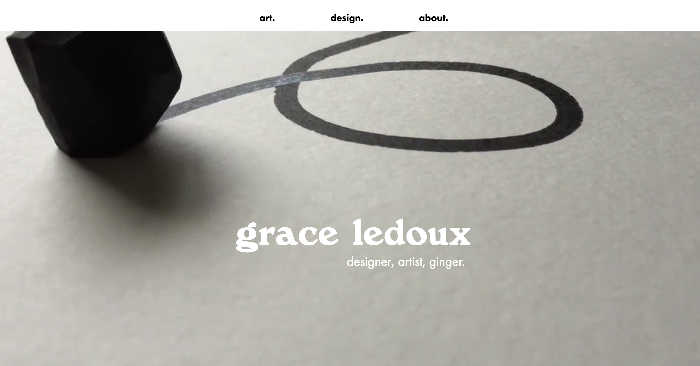

APRIL 17, 2018
As I'm working through trying to excecute my sketches, it's clear some changes need to be made for the sake of a better site as opposed to saying true to my sketches. This is about how far I got into actualizing my home page sketches before realizing it wasn't sitting well with me and just seemed too busy:
I also realized I didn't have a plan for those photos in the background (they just seem like they're begging to be interacted with!), and nothing I came up with seemed like a good enough reason to keep them on the home page. So I did some re-thinking, and realized the one thing I really like about my current portfolio site is the video background on the home page—it seemed unneccesary to change that just for change's sake. Instead, I played around with using it in combination with the title text and top menu:
  While I liked the look of the white text over the video on its own, in some shots it got totally lost and was super hard to see. I ended up compromising by having the orange circle animate in after a beat, giving you both the white text on its own as well as the text over the circle (with better readability).
I went into the other pages with the mentality of streamlining, keeping it simple, and achieving my goal of clarity and ease. After grappling with the side-scrolling carousel for days on end, I reached a point where I realized I was spending a disproportionate amount of time on a detail. Yes, I did really want the carousels, but ultimately, having a functional easy gallery format was my top priority. So I shifted gears and went with big square photos...
...That react to hover with these circles featuring the piece's title and a little tagline. The circles sort of spin animate in on hover, which feels like a nice little touch:
I realized in this process that a lot of my work is photographed on a white background, and it's hard to tell where the borders of the photos are (making everything awkwardly mesh together). Hence the drop shadows. To diffrentiate the individual pieces' pages from the gallery pages, I went with a single column of photos with the text fixed on the right so it scrolls with you.
Finally and probably most roughly, the About page. This threw me a little bit: my sketches had apparently just overseen this page, and while I wanted a picture or something visual going on, I couldn't decide what kind of photo could possibly be best and fit with the look and feel of the site. For now, I'm using an illustration I did a while back, but already in my user testing I've received multiple comments about how this page doesn't feel like all the others.
It's functional and has all the content I want it to include, and I feel like I have a really clear direction forward at this point. In user testing, I received a lot of really helpful edits I would've totally overlooked, so fixing those is first on the agenda. Then, I need to code it for phones!